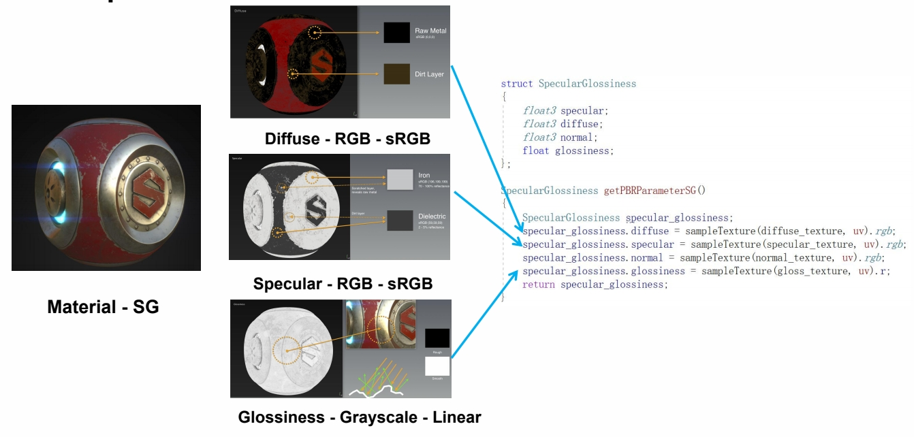

P47
Physical-Based Material
P54
Disney Principled BRDF
Principles to follow when implementing model:
- Intuitive rather than physical parameters should be used
- There should be as few parameters as possible
- Parameters should be zero to one over their plausible range
- Parameters should be allowed to be pushed beyond their plausible range where it makes sense
- All combinations of parameters should be as robust and plausible as possible
P56
PBR Specular Glossiness

用图片方式帮助选择参数，实现 shader，把参数代入模型，计算结果。
P58
PBR Metallic Roughness
Specular Glossiness 模型的封装版，解决其 Frenel 项炸掉的问题。灵活度下降，但不容易出问题。
P60
PBR Pipeline MR vs SG

MR
Pros
- Can be easier to author and less prone to errors caused by supplying incorrect dielectric F0 data
- Uses less texture memory, as metallic and roughness are both grayscale maps
Cons
- No control over F0 for dielectrics in map creation. However, most implementations have a specular control to override the base 4% value
- Edge artifacts are more noticeable, especially at lower resolutions
SG
Pros
- Edge artifacts are less apparent
- Control over dielectric F0 in the specular map
Cons
- Because the specular map provides control over dielectric F0,it is more susceptible to use of incorrect values. It is possible to break the law of conservation if handled incorrectly in the shader
- Uses more texture memory with an additional RGB map